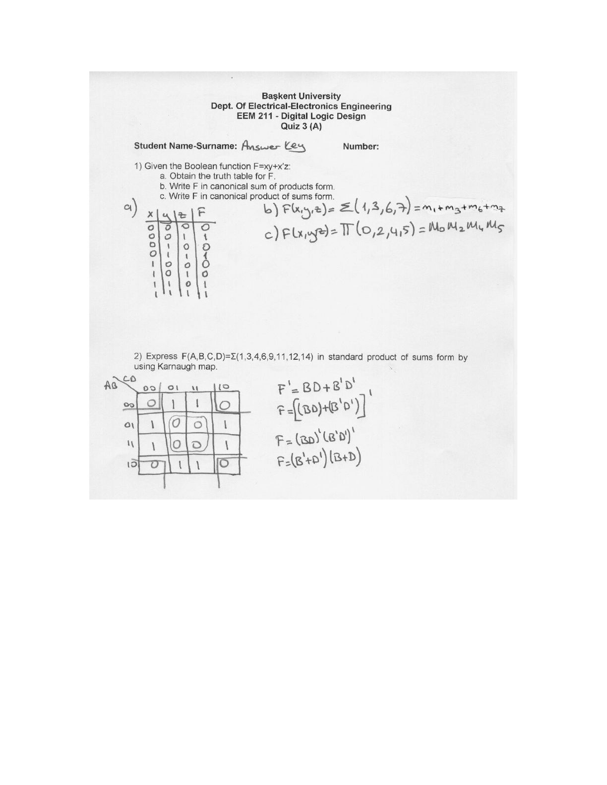
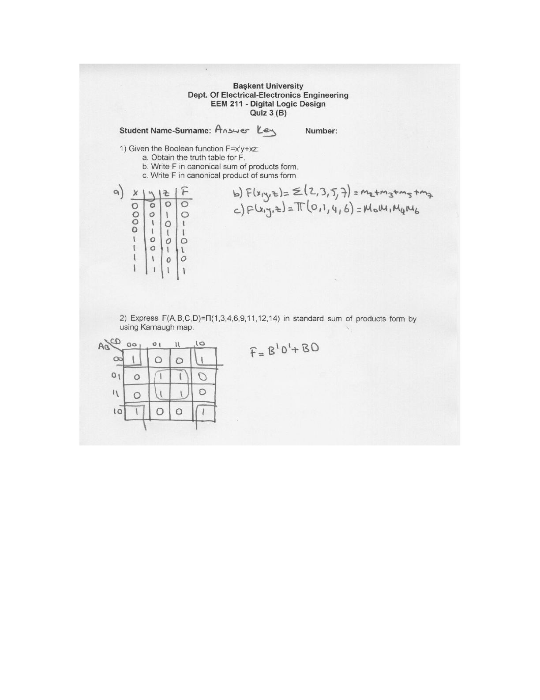

· EEM211
EEM211 Sayısal Mantık Tasarımı: Quiz 3 Cevap Anahtarı (2006)
EEM211 – Sayısal Mantık Tasarımı · 20.10.2006 · 16.10.2026
Bu yazı, Başkent Üniversitesi EEM 211 Digital Logic Design (Sayısal Mantık Tasarımı) dersinin Ekim 2006'da yapılan Quiz 3 sınavının cevap anahtarıdır (dosya bilgisinde hazırlayan: Evren Ferhat Emekdaş). İki soruluk kısa sınavın konusu kanonik biçimler ve Karnaugh haritası. A ve B grubu aynı soruların farklı fonksiyonlarla sorulmuş hâli. Sorular basılı, çözümler el yazısı; orijinal Word dosyası yazının sonunda indirilebilir.
Quiz 3 (A)
Soru 1
Given the Boolean function F=xy+x'z: a. Obtain the truth table for F. b. Write F in canonical sum of products form. c. Write F in canonical product of sums form.
a) Doğruluk tablosu:
| x | y | z | F |
|---|---|---|---|
| 0 | 0 | 0 | 0 |
| 0 | 0 | 1 | 1 |
| 0 | 1 | 0 | 0 |
| 0 | 1 | 1 | 1 |
| 1 | 0 | 0 | 0 |
| 1 | 0 | 1 | 0 |
| 1 | 1 | 0 | 1 |
| 1 | 1 | 1 | 1 |
- b) F(x, y, z) = Σ(1, 3, 6, 7) = m1 + m3 + m6 + m7
- c) F(x, y, z) = Π(0, 2, 4, 5) = M0 · M2 · M4 · M5
Soru 2
Express F(A,B,C,D)=Σ(1,3,4,6,9,11,12,14) in standard product of sums form by using Karnaugh map.
Karnaugh haritası (satırlar AB, sütunlar CD):
| AB \ CD | 00 | 01 | 11 | 10 |
|---|---|---|---|---|
| 00 | 0 | 1 | 1 | 0 |
| 01 | 1 | 0 | 0 | 1 |
| 11 | 1 | 0 | 0 | 1 |
| 10 | 0 | 1 | 1 | 0 |
Sıfırlar gruplanarak F' bulunur: dört köşe B'D', ortadaki dörtlü BD grubunu verir.
- F' = BD + B'D'
- F = [(BD) + (B'D')]'
- F = (BD)' · (B'D')'
- F = (B' + D')(B + D)

Quiz 3 (B)
Soru 1
Given the Boolean function F=x'y+xz: a. Obtain the truth table for F. b. Write F in canonical sum of products form. c. Write F in canonical product of sums form.
a) Doğruluk tablosu:
| x | y | z | F |
|---|---|---|---|
| 0 | 0 | 0 | 0 |
| 0 | 0 | 1 | 0 |
| 0 | 1 | 0 | 1 |
| 0 | 1 | 1 | 1 |
| 1 | 0 | 0 | 0 |
| 1 | 0 | 1 | 1 |
| 1 | 1 | 0 | 0 |
| 1 | 1 | 1 | 1 |
- b) F(x, y, z) = Σ(2, 3, 5, 7) = m2 + m3 + m5 + m7
- c) F(x, y, z) = Π(0, 1, 4, 6) = M0 · M1 · M4 · M6
Soru 2
Express F(A,B,C,D)=Π(1,3,4,6,9,11,12,14) in standard sum of products form by using Karnaugh map.
| AB \ CD | 00 | 01 | 11 | 10 |
|---|---|---|---|---|
| 00 | 1 | 0 | 0 | 1 |
| 01 | 0 | 1 | 1 | 0 |
| 11 | 0 | 1 | 1 | 0 |
| 10 | 1 | 0 | 0 | 1 |
Birler gruplanır: dört köşe B'D', ortadaki dörtlü BD.
F = B'D' + BD
